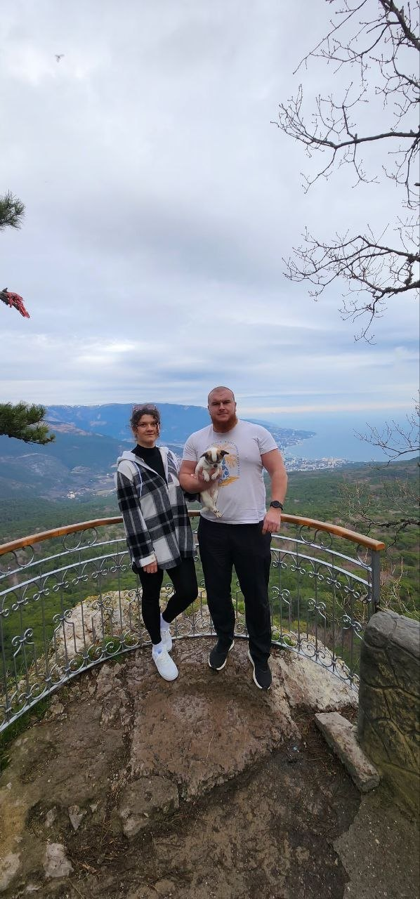

Тайное послание для близких
Алексей & Лияна
28 августа 2026
16:40
Листайте вверх за следующим ключом
Ключ времени
До ответа осталось
0
дней
0
часов
0
минут
0
секунд
Время считает не просто секунды. Оно ведёт нас к дню, где два имени станут одной семьёй.
Сегодня ответ становится семьёй!
Ключ места
Дворец «да»
Городской дворец бракосочетания · Тула, ул. Советская, 47
Ключи прошлого
Соберите нашу загадку

01 / 16Ключ 1
На высоте, где город кажется тише, спрятан первый ответ: мы уже смотрели в одну сторону.
Главный ответ
Где искать нас
Когда откроется тайна
28 августа 2026 · 16:40
Где прозвучит ответ
Городской дворец бракосочетания
Куда приведёт карта
ул. Советская, 47, Тула
Ответ найден
С любовью, семья Кульпиных
Главная разгадка проста: быть рядом с теми, кто делает этот день настоящим.